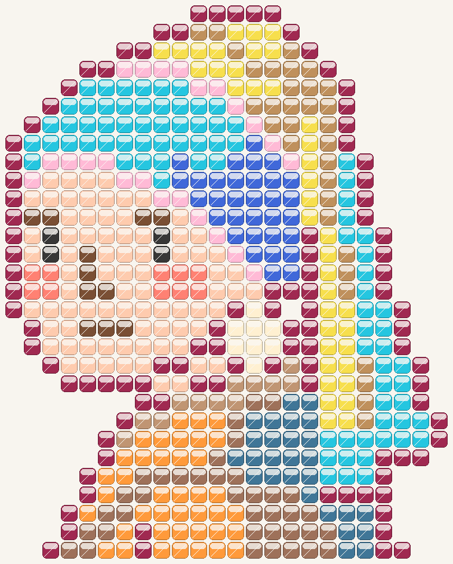
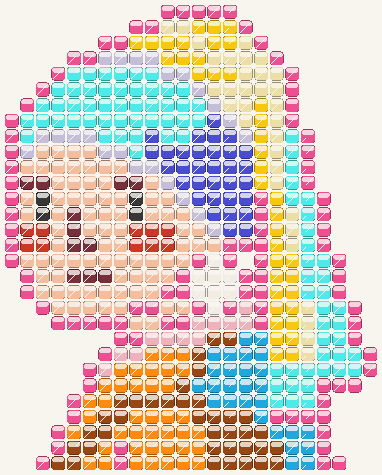
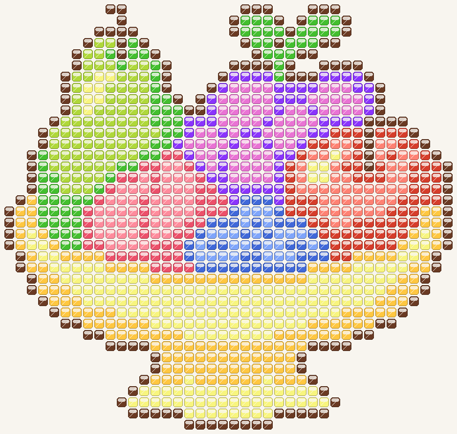
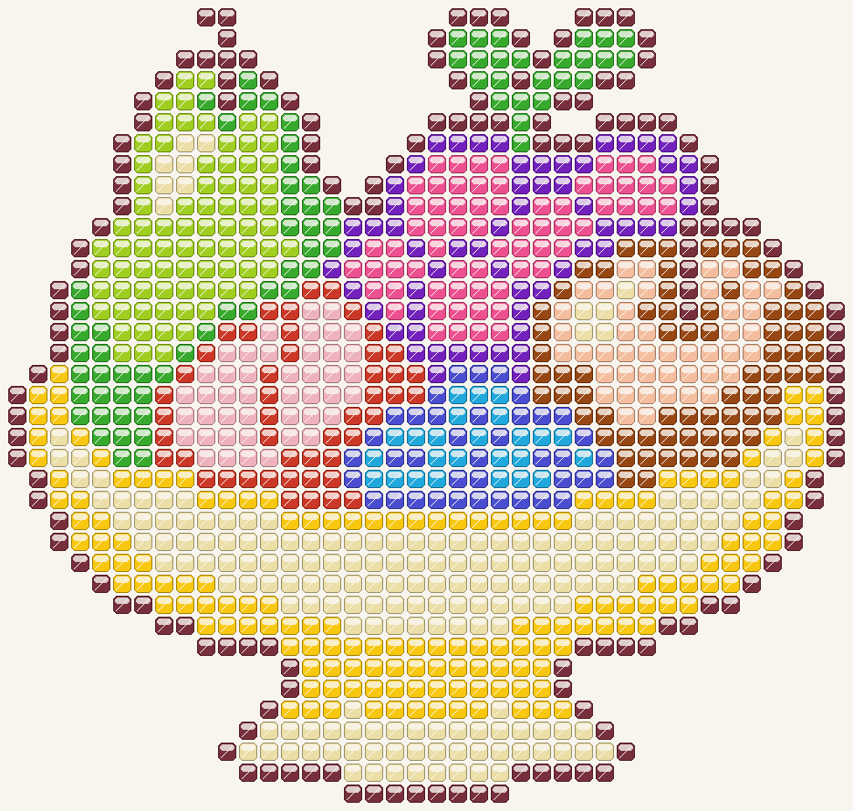

右侧使用项目现有豆豆颜色，每种原色对应一种不同的项目色，不合并颜色。图案形状、豆数和乱序对应关系保持不变。
为保留颜色区分，部分色块无法使用各自最近的颜色，请重点观察主体配色和阴影效果。此页仅供预览，正式关卡尚未替换。


| #F7DF4D | → | #F8C811 | 39豆 |
| #4068D9 | → | #4A4DCF | 32豆 |
| #25C6E0 | → | #4EEAEA | 81豆 |
| #7A4F34 | → | #782F3C | 11豆 |
| #FECBAE | → | #F4BD9E | 78豆 |
| #BF905C | → | #EBDEA6 | 32豆 |
| #FF8173 | → | #CC3827 | 10豆 |
| #FF9A3B | → | #FE8B10 | 40豆 |
| #FFF0D1 | → | #F2EDE4 | 8豆 |
| #407697 | → | #20A8DC | 27豆 |
| #9E715A | → | #974714 | 37豆 |
| #C09573 | → | #EEB2BC | 12豆 |
| #A02951 | → | #ED5090 | 103豆 |
| #FFBAD6 | → | #C4BED9 | 23豆 |
| #373737 | → | #373737 | 4豆 |


| #4068D9 | → | #4A4DCF | 39豆 |
| #8A34FD | → | #7221BC | 60豆 |
| #FF8B9C | → | #EEB2BC | 44豆 |
| #FFC741 | → | #F8C811 | 155豆 |
| #EC506A | → | #CC3827 | 47豆 |
| #E973D4 | → | #ED5090 | 66豆 |
| #43BF2F | → | #37A92D | 74豆 |
| #7FA5FB | → | #20A8DC | 25豆 |
| #D63D2B | → | #974714 | 70豆 |
| #FF8173 | → | #F4BD9E | 44豆 |
| #F8F57E | → | #EBDEA6 | 188豆 |
| #AFD83A | → | #9FCE21 | 78豆 |
| #6A3A23 | → | #782F3C | 150豆 |